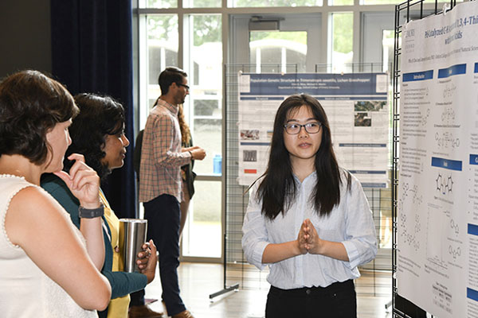

Facilitating Undergraduate Research for Freshman and Sophomores
JMM 2026
Tien Chih Oxford College of Emory University
About Oxford College

- One of several colleges of Emory University.
- About 900-950 students, 1st and 2nd year only.
- Strong emphasis on a liberal arts curriculum.
- Mostly 100 and 200 level courses.
- Started there in 2022.
About Oxford College

- Strong culture of undergraduate research.
- About 70-80ish? math majors.
Foundations of proof
typically taken in Spring semester as a sophomore 😬.
Personal Research

\(\times\)-homotopy
(categorically defined homotopy in the category of graphs).Homotopical combinatorics
combinatorics oftransfer systems
, substructures on finite lattices.
Mentoring undergraduate research

- Save problems from personal research.
- Use informal definitions as much as possible.
- Have the students compute many many many examples!
- Work with the students translating from
thoughts
intomath
.
Project 1

- Keira Behal computed fundamental groups for Hamming graphs in Fall 2022.
- \(\Pi(H(n,2))\cong\{e\}, \Pi(H(n,k))\cong \mathbb{Z}_2^n \).
- Outstanding Poster aj MathFest 2023.
- Published in 2025 with PUMP!
Project 2

- 2024 MRC resulted in a paper showing bijections between numerous structures defined on lattices.
- Structures are not in general in bijection with the dual structures
- Students in Fall 2025 investigated when one is greater than the other.
- Promising initial results!
Project 2
Thank You!